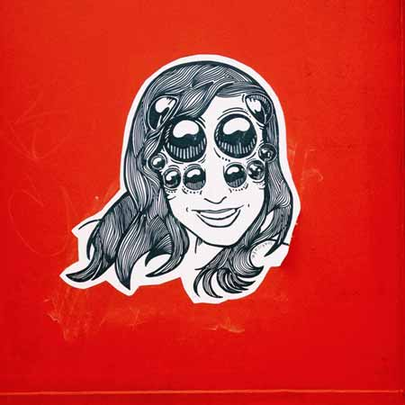

(My real name is Marissa)
I’m a motion designer and illustrator in Ottawa, Canada.
I have a great preoccupation with rubber hose animation, graffiti, woodblock printing, comic books, and old animation devices. I love to work in a variety of styles including traditional cell animation, tactile stop motion and digital animation. I have a degree in film studies and I’m fluent in After Effects.
Send me an email. I’d like to work with you.